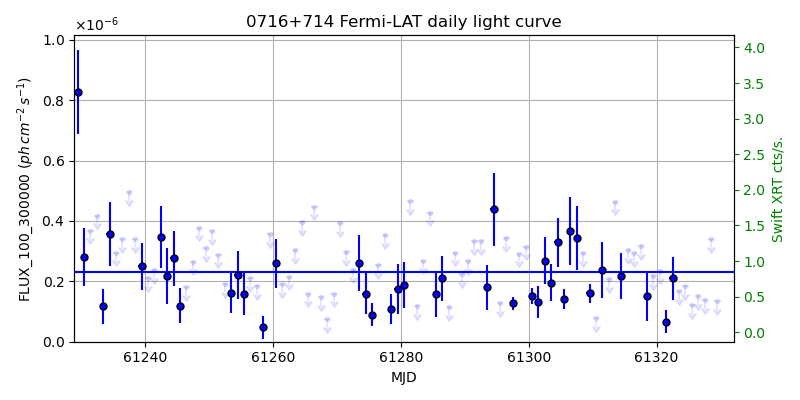
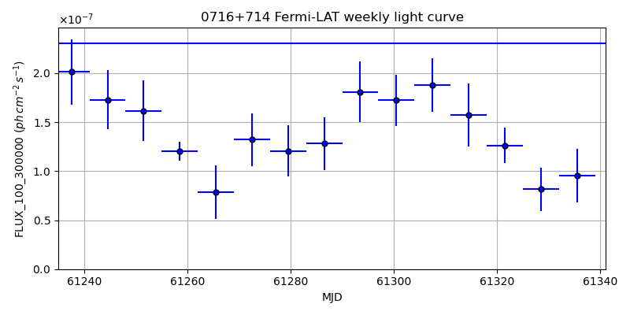
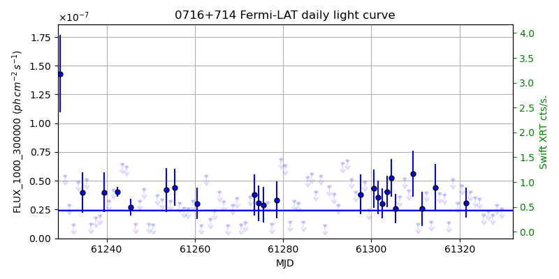
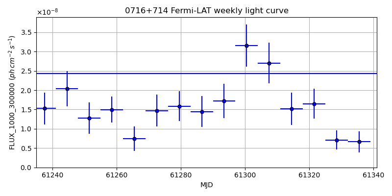

LAT Lightcurve site: https://fermi.gsfc.nasa.gov/ssc/data/access/lat/msl_lc/source/0716p714
Swift site: https://www.swift.psu.edu/monitoring/source.php?source=S50716+714
NED: Query
Time of last update of this page: UT: 2026-10-24 15:18 (MJD: 61337.638)
| Property | Value |
|---|---|
| R.A. | 7:21:43.20 |
| Dec. | 71:21:00.0 |
| z | 0.310 |
| 3FGL SpectrumType | LogParabola |
| 3FGL PL Index | |
| 3FGL Flux_100_300000 | 2.31e-07 1 / (s cm2) |
| 3FGL Flux_1000_300000 | 2.44e-08 1 / (s cm2) |
| 3FGL Flux >200 GeV | 6.00e-11 1 / (s cm2) |
| 3FGL Extrap. Crab >200 GeV | 0.25 |
| 3FGL Flux After EBL Absorption >200GeV | 1.88e-11 1 / (s cm2) |
| 3FGL EBL Crab Fraction >200GeV | 0.08 |

| MJD | dMJD | Flux | dFlux | Frac3FGL | FracCrab>200GeV | EBLFracCrab>200GeV |
|---|---|---|---|---|---|---|
| 61332.50 | 0.50 | 2.20e-07 | 0.00e+00 | 0.00 | 0.00 | 0.00 |
| 61333.50 | 0.50 | 1.97e-07 | 0.00e+00 | 0.00 | 0.00 | 0.00 |
| 61334.50 | 0.50 | 1.79e-07 | 0.00e+00 | 0.00 | 0.00 | 0.00 |
| 61335.50 | 0.50 | 2.63e-07 | 0.00e+00 | 0.00 | 0.00 | 0.00 |
| 61336.50 | 0.50 | 2.40e-07 | 0.00e+00 | 0.00 | 0.00 | 0.00 |

| MJD | dMJD | Flux | dFlux | Frac3FGL | FracCrab>200GeV | EBLFracCrab>200GeV |
|---|---|---|---|---|---|---|
| 61300.50 | 3.50 | 1.72e-07 | 2.60e-08 | 0.75 | 0.19 | 0.06 |
| 61307.50 | 3.50 | 1.88e-07 | 2.75e-08 | 0.81 | 0.21 | 0.07 |
| 61314.50 | 3.50 | 1.57e-07 | 3.20e-08 | 0.68 | 0.17 | 0.05 |
| 61321.50 | 3.50 | 1.26e-07 | 1.79e-08 | 0.55 | 0.14 | 0.04 |
| 61328.50 | 3.50 | 8.14e-08 | 2.18e-08 | 0.35 | 0.09 | 0.03 |

| MJD | dMJD | Flux | dFlux | Frac3FGL | FracCrab>200GeV | EBLFracCrab>200GeV |
|---|---|---|---|---|---|---|
| 61332.50 | 0.50 | 2.42e-08 | 0.00e+00 | 0.00 | 0.00 | 0.00 |
| 61333.50 | 0.50 | 1.18e-08 | 0.00e+00 | 0.00 | 0.00 | 0.00 |
| 61334.50 | 0.50 | 1.07e-08 | 0.00e+00 | 0.00 | 0.00 | 0.00 |
| 61335.50 | 0.50 | 3.75e-08 | 0.00e+00 | 0.00 | 0.00 | 0.00 |
| 61336.50 | 0.50 | 4.35e-08 | 0.00e+00 | 0.00 | 0.00 | 0.00 |

| MJD | dMJD | Flux | dFlux | Frac3FGL | FracCrab>200GeV | EBLFracCrab>200GeV |
|---|---|---|---|---|---|---|
| 61300.50 | 3.50 | 3.16e-08 | 5.44e-09 | 1.30 | 0.33 | 0.10 |
| 61307.50 | 3.50 | 2.70e-08 | 5.29e-09 | 1.11 | 0.28 | 0.09 |
| 61314.50 | 3.50 | 1.52e-08 | 4.21e-09 | 0.62 | 0.16 | 0.05 |
| 61321.50 | 3.50 | 1.65e-08 | 3.91e-09 | 0.68 | 0.17 | 0.05 |
| 61328.50 | 3.50 | 7.12e-09 | 2.47e-09 | 0.29 | 0.07 | 0.02 |
--------------------------------------------------------- Using user-supplied coords: 7:21:43.20 71:21:00.0 2000 --------------------------------------------------------- FLWO UT night of: 2026-10-25 Local Sid. @ Midnight: 01:50 Sunset (-15.0) (local, UT): 18:49 01:49 Sunrise (-15.0) (local, UT): 05:27 12:27 Moonrise (local, UT): Moonset (local, UT): Moon phase: 0.99 --------------------------------------------------------- AzTime LSID UT Obj_el Obj_az Mn_el Mn_az Sep. --------------------------------------------------------- 18:49 20:39 01:49 13.9 6.1 26.2 94.5 82.6 19:19 21:09 02:19 14.7 8.4 32.4 98.6 82.4 19:49 21:39 02:49 15.7 10.6 38.6 103.2 82.2 20:19 22:09 03:19 17.0 12.8 44.7 108.4 82.0 20:49 22:39 03:49 18.5 14.7 50.6 114.6 81.8 21:19 23:09 04:19 20.3 16.5 56.2 122.3 81.7 21:49 23:39 04:49 22.2 18.1 61.2 132.2 81.5 22:19 00:09 05:19 24.2 19.4 65.5 145.3 81.3 22:49 00:39 05:49 26.4 20.6 68.4 162.2 81.1 23:19 01:10 06:19 28.7 21.4 69.4 182.2 80.9 23:49 01:40 06:49 31.1 21.9 68.2 202.0 80.8 00:19 02:10 07:19 33.5 22.1 65.1 218.6 80.6 00:49 02:40 07:49 35.9 22.0 60.8 231.3 80.4 01:19 03:10 08:19 38.2 21.4 55.7 240.9 80.3 01:49 03:40 08:49 40.5 20.5 50.1 248.5 80.1 02:19 04:10 09:19 42.7 19.1 44.3 254.6 79.9 02:49 04:40 09:49 44.7 17.2 38.2 259.8 79.8 03:19 05:10 10:19 46.5 14.9 32.1 264.4 79.6 03:49 05:40 10:49 48.0 12.1 26.0 268.5 79.4 04:19 06:10 11:19 49.1 8.9 19.9 272.4 79.3 04:49 06:40 11:49 49.9 5.4 13.8 276.2 79.1 05:19 07:11 12:19 50.3 1.7 7.8 279.9 78.9 05:27 07:18 12:27 50.4 0.8 6.2 280.9 78.8 --------------------------------------------------------- Source never above horizon of 55.0 deg. Dark hours >55 deg.: 0.00